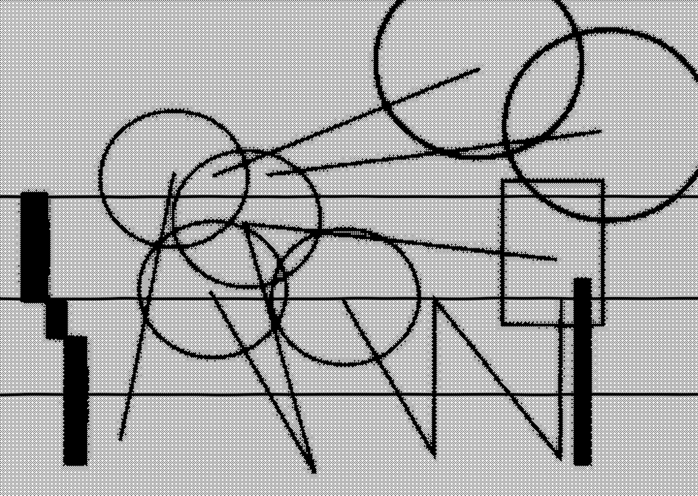
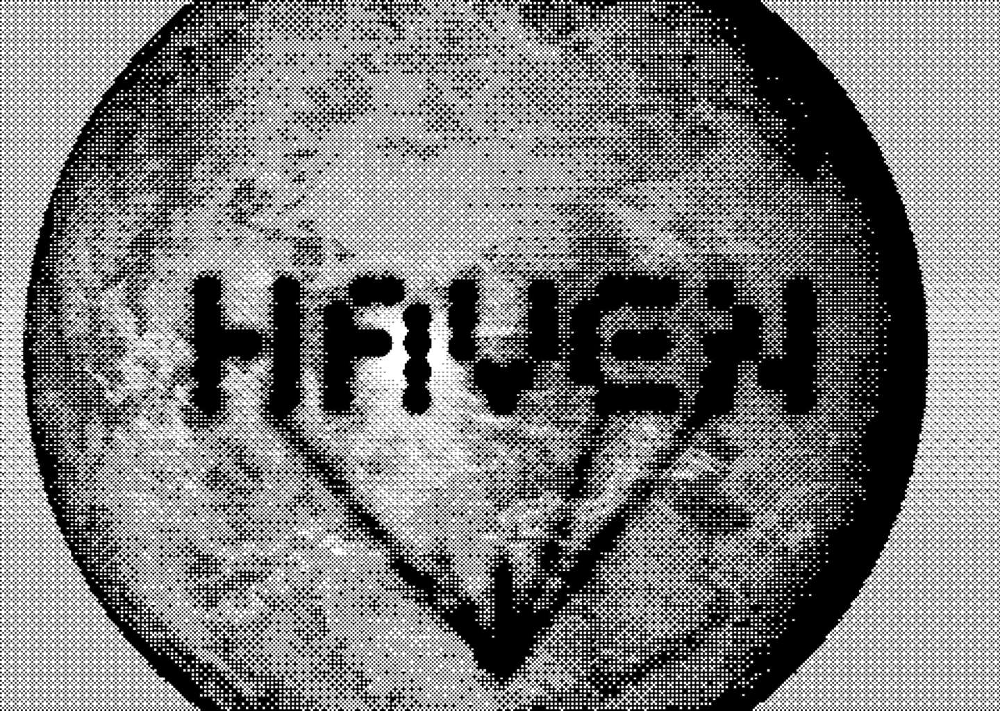

Haven App Interface
An interface in motion for Mars settlers who can’t hear, turning sound into a visual language of signals. The project consists of a loader, an onboarding process and a pop-up feature
Course: Motion for Digital Products, Third-year (2026) Mentor: Inbal Gary.
The brief asked for an app for new settlers on Mars. My constraint: they cannot hear, because of helmets or the atmosphere, so they communicate through signals.
Without sound, motion has to carry the message, and every movement must read as a signal. The shapes draw on musique concrète visualizations and the written language in Arrival.
The visual language comes from retro interfaces: dithered screens, pixelated lines and flickers like a short circuit.
Pixel lettering built from dots is used for headlines; a sharp serif carries the text. Everything stays black and white so the app reads clearly. Motion moves upward, like a live interface, and its softness balances the sharp shapes.


Next Project →